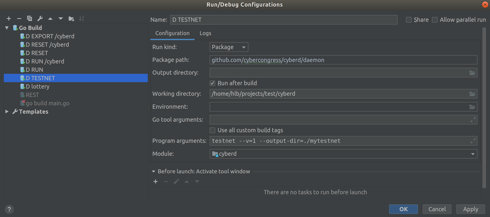
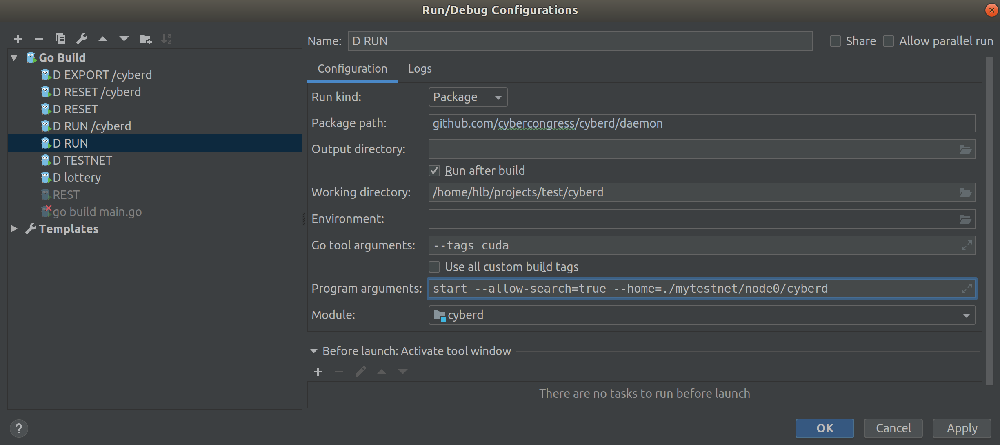
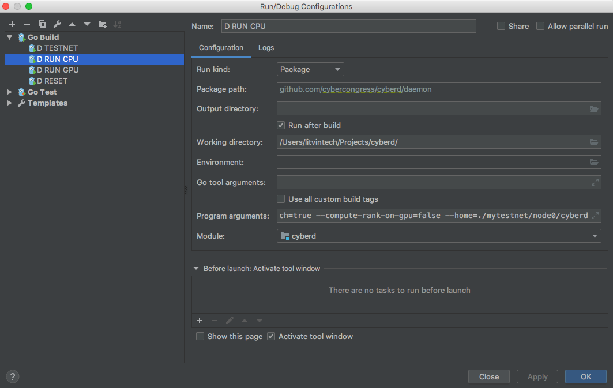
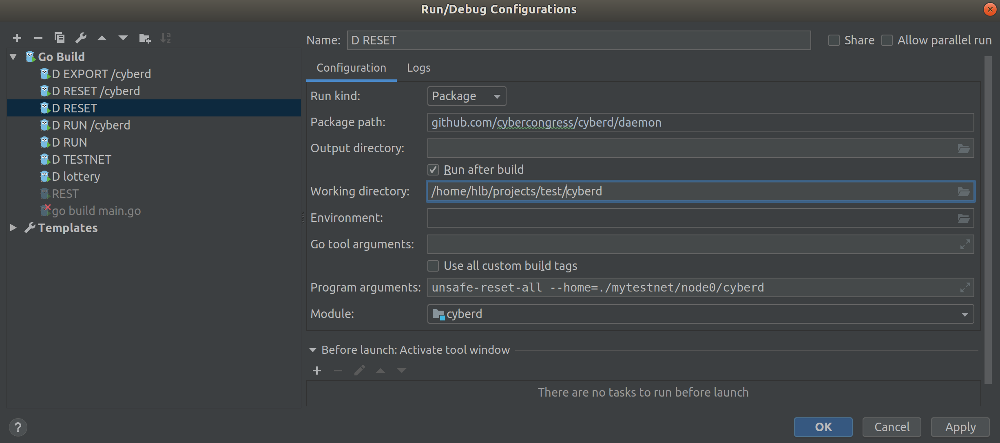

Setup development environment
Prestart
- Install Golang 1.11+
- Install GoLand IDE
Import project to GoLand
Open Project in GoLand by selecting: Open Project -> selecting cloned repository root folder
Enable go mod package management
Wait for dependency downloading and indexation
Add Run Configurations
###Add testnet configuration 
Add run configuration with GPU

Notes about GPU dev environment
TO DO
Add run configuration with CPU

start --allow-search=true --compute-rank-on-gpu=false --home=./mytestnet/node0/cyberd
Add reset configuration

Running Node
Generate testnet
Before node running, setup testnet with run configuration D TESTNET. - Folder /mytestnet will be added to the project root. - In /node0 subfolder you can find daemon and cli folders. - Daemon folder will contain validator node data. - In /cyberdcli folder you can find initial validator seed.
mytestnet
├── gentxs
│ └── node0.json
└── node0
├── cyberd
│ ├── config
│ │ ├── config.toml
│ │ ├── genesis.json
│ │ ├── node_key.json
│ │ └── priv_validator_key.json
│ └── data
│ ├── priv_validator_state.json
└── cyberdcli
└── key_seed.json
Run with GPU or CPU
After, just run RUN node configuration.
I[2019-05-15|15:06:56.735] Starting ABCI with Tendermint module=main
I[2019-05-15|15:06:56.789] Loading mem state module=main
I[2019-05-15|15:06:56.789] App loaded module=main time=118.743µs
I[2019-05-15|15:06:56.793] Search index loaded! module=main time=3.416449ms
I[2019-05-15|15:06:56.793] Search index starting listen new links module=main
I[2019-05-15|15:06:56.793] Search index starting listen new rank module=main
I[2019-05-15|15:06:56.910] Applying genesis module=main
I[2019-05-15|15:06:56.914] File with links not found. Empty set will be used module=main
I[2019-05-15|15:06:56.914] Genesis applied module=main time=3.420262ms
E[2019-05-15|15:06:56.947] Couldn't connect to any seeds module=p2p
I[2019-05-15|15:07:02.014] Executed block module=state height=1 validTxs=0 invalidTxs=0
I[2019-05-15|15:07:02.014] Rank calculated module=main time=2.069µs links=0 cids=0 hash=e3b0c44298fc1c149afbf4c8996fb92427ae41e4649b934ca495991b7852b855
I[2019-05-15|15:07:02.047] Committed state module=state height=1 txs=0 appHash=E3B0C44298FC1C149AFBF4C8996FB92427AE41E4649B934CA495991B7852B855
I[2019-05-15|15:07:07.078] Executed block module=state height=2 validTxs=0 invalidTxs=0
I[2019-05-15|15:07:07.107] Committed state module=state height=2 txs=0 appHash=E3B0C44298FC1C149AFBF4C8996FB92427AE41E4649B934CA495991B7852B855
I[2019-05-15|15:07:12.113] Executed block module=state height=3 validTxs=0 invalidTxs=0
I[2019-05-15|15:07:12.144] Committed state module=state height=3 txs=0 appHash=E3B0C44298FC1C149AFBF4C8996FB92427AE41E4649B934CA495991B7852B855
I[2019-05-15|15:07:17.168] Executed block module=state height=4 validTxs=0 invalidTxs=0
I[2019-05-15|15:07:17.207] Committed state module=state height=4 txs=0 appHash=E3B0C44298FC1C149AFBF4C8996FB92427AE41E4649B934CA495991B7852B855
You may stop, and RUN again
I[2019-05-15|14:48:58.191] Starting ABCI with Tendermint module=main
I[2019-05-15|14:48:58.343] Loading mem state module=main
I[2019-05-15|14:48:58.344] App loaded module=main time=929.472µs
I[2019-05-15|14:48:58.399] Search index loaded! module=main time=16.928556ms
I[2019-05-15|14:48:58.399] Search index starting listen new links module=main
I[2019-05-15|14:48:58.399] Search index starting listen new rank module=main
E[2019-05-15|14:48:58.638] Couldn't connect to any seeds module=p2p
I[2019-05-15|14:49:03.716] Executed block module=state height=2032 validTxs=0 invalidTxs=0
I[2019-05-15|14:49:03.755] Committed state module=state height=2032 txs=0 appHash=1BAA91AD6FD9742B7B094204037F80A8174673BA0FF304D3FF5DFEEAF8FF7DDC
I[2019-05-15|14:49:08.759] Executed block module=state height=2033 validTxs=0 invalidTxs=0
I[2019-05-15|14:49:08.793] Committed state module=state height=2033 txs=0 appHash=1BAA91AD6FD9742B7B094204037F80A8174673BA0FF304D3FF5DFEEAF8FF7DDC
I[2019-05-15|14:49:13.826] Executed block module=state height=2034 validTxs=0 invalidTxs=0
I[2019-05-15|14:49:13.860] Committed state module=state height=2034 txs=0 appHash=1BAA91AD6FD9742B7B094204037F80A8174673BA0FF304D3FF5DFEEAF8FF7DDC
Reset
You can reset chains data to genesis at any time by executing RESET run configuration
I[2019-05-15|15:09:43.338] Removed existing address book module=main file=mytestnet/node0/cyberd/config/addrbook.json
I[2019-05-15|15:09:43.345] Removed all blockchain history module=main dir=mytestnet/node0/cyberd/data
I[2019-05-15|15:09:43.347] Reset private validator file to genesis state module=main keyFile=mytestnet/node0/cyberd/config/priv_validator_key.json stateFile=mytestnet/node0/cyberd/data/priv_validator_state.json
Exploring
Guide to all commands you may to research here: Ultimate cyberd CLI guide
Before, build cyberd cli:
go build -o cyberdcli ./cli
You will get cyberdcli into you project root
Add keys:
./cyberdcli keys add validator --recover
Enter and you protection password-passphrase and mnemocic from file mytestnet/node0/cyberdcli/key_seed.json
Enter a passphrase to encrypt your key to disk:
Repeat the passphrase:
> Enter your bip39 mnemonic
inhale enforce brand fever core smart draft ceiling among cluster orbit robust tonight elephant below twice goat update uncover employ spider brass consider shiver
NAME: TYPE: ADDRESS: PUBKEY:
validator local cyber18l4v00ar4xsgzc4rr40tfctcjgyp7ppwysdcns cyberpub1addwnpepq0zm06twxtf7ezv4nj9dhud9ds0fnhkks6qw4g8pdwxzh3evggpvvksh60l
Query status:
./cyberdcli status --indent
{
"node_info": {
"protocol_version": {
"p2p": "7",
"block": "10",
"app": "0"
},
"id": "b99f3254757310d1f470f5cd0331b766f2a843f9",
"listen_addr": "tcp://0.0.0.0:26656",
"network": "chain-K6U4uZ",
"version": "0.30.1",
"channels": "4020212223303800",
"moniker": "node0",
"other": {
"tx_index": "on",
"rpc_address": "tcp://0.0.0.0:26657"
}
},
"sync_info": {
"latest_block_hash": "8059683636349AF9237FABFD147BAD89C7188571E37E8F09356B1837A88337BA",
"latest_app_hash": "E3B0C44298FC1C149AFBF4C8996FB92427AE41E4649B934CA495991B7852B855",
"latest_block_height": "134",
"latest_block_time": "2019-05-15T09:04:31.768026Z",
"catching_up": false
},
"validator_info": {
"address": "9C2C13F2B6608BF00BADF501A04E728AC5FF7ADC",
"pub_key": {
"type": "tendermint/PubKeyEd25519",
"value": "or7X/1BYcGE1cVX5e3vG9G76JPfXZDKTDg8YL3vtKzo="
},
"voting_power": "10000000000"
}
}
Query balance:
./cyberdcli query account cyber18l4v00ar4xsgzc4rr40tfctcjgyp7ppwysdcns
Account:
Address: cyber18l4v00ar4xsgzc4rr40tfctcjgyp7ppwysdcns
Pubkey: cyberpub1addwnpepq0zm06twxtf7ezv4nj9dhud9ds0fnhkks6qw4g8pdwxzh3evggpvvksh60l
Coins: 10000000000000000cyb
AccountNumber: 0
Sequence: 1
Query validators:
./cyberdcli query staking validators
Validator
Operator Address: cybervaloper18l4v00ar4xsgzc4rr40tfctcjgyp7ppwy3lgak
Validator Consensus Pubkey: cybervalconspub1zcjduepq52ld0l6stpcxzdt32huhk77x73h05f8h6ajr9ycwpuvz77ld9vaq6ka2zl
Jailed: false
Status: Bonded
Tokens: 10000000000000000
Delegator Shares: 10000000000000000.000000000000000000
Description: {node0 tst com.com det}
Unbonding Height: 0
Unbonding Completion Time: 1970-01-01 00:00:00 +0000 UTC
Minimum Self Delegation: 1
Commission: rate: 0.000000000000000000, maxRate: 0.000000000000000000, maxChangeRate: 0.000000000000000000, updateTime: 2019-05-15 08:52:36.324624 +0000 UTC
Add links
./cyberdcli link --from=validator --cid-from=QmbTARMsUw9X2ZEbBaFXRu9JEqNN2g4VZ6DPgtgZH1opy9 --cid-to=QmNWkR2v4ZEzT43xiNKJcFPkFQioGbhqsWcE5qayWQHXAo --chain-id=chain-K6U4uZ
./cyberdcli link --from=validator --cid-from=QmbTARMsUw9X2ZEbBaFXRu9JEqNN2g4VZ6DPgtgZH1opy9 --cid-to=Qmd7AaekFAxXedSQx3B3h8Wc5aeYPYRiYF83Vjb4tVLkMM --chain-id=chain-K6U4uZ
./cyberdcli link --from=validator --cid-from=QmbTARMsUw9X2ZEbBaFXRu9JEqNN2g4VZ6DPgtgZH1opy9 --cid-to=QmfSh5obPXmkaTd9aaNCYWxnKHZTH6EYeEh7Hq7xgGnRVy --chain-id=chain-K6U4uZ
{"chain_id":"chain-K6U4uZ","account_number":"0","sequence":"1","fee":{"amount":null,"gas":"200000"},"msgs":[{"type":"cyberd/Link","value":{"address":"cyber18l4v00ar4xsgzc4rr40tfctcjgyp7ppwysdcns","links":[{"from":"QmbTARMsUw9X2ZEbBaFXRu9JEqNN2g4VZ6DPgtgZH1opy9","to":"QmNWkR2v4ZEzT43xiNKJcFPkFQioGbhqsWcE5qayWQHXAo"}]}}],"memo":""}
confirm transaction before signing and broadcasting [Y/n]: Y
Password to sign with 'validator':
Response:
Height: 1720
TxHash: 68C4F6389D36747A6A609CCDD9D44027A5234850FF065C78D1B1AB3FAC421541
Logs: [{"msg_index":0,"success":true,"log":""}]
GasUsed: 31368
Tags:
- action = link
Search and get links with rank:
curl -X GET 'localhost:26657/search?cid="QmbTARMsUw9X2ZEbBaFXRu9JEqNN2g4VZ6DPgtgZH1opy9"'
Links added, rank for them will be computed at next round:
{
"jsonrpc": "2.0",
"id": "",
"result": {
"cids": [
{
"cid": "QmNWkR2v4ZEzT43xiNKJcFPkFQioGbhqsWcE5qayWQHXAo",
"rank": 0
},
{
"cid": "Qmd7AaekFAxXedSQx3B3h8Wc5aeYPYRiYF83Vjb4tVLkMM",
"rank": 0
},
{
"cid": "QmfSh5obPXmkaTd9aaNCYWxnKHZTH6EYeEh7Hq7xgGnRVy",
"rank": 0
}
],
"total": "3",
"page": "0",
"perPage": "100"
}
}%
When rank computed:
{
"jsonrpc": "2.0",
"id": "",
"result": {
"cids": [
{
"cid": "QmNWkR2v4ZEzT43xiNKJcFPkFQioGbhqsWcE5qayWQHXAo",
"rank": 0.056093750000000005
},
{
"cid": "Qmd7AaekFAxXedSQx3B3h8Wc5aeYPYRiYF83Vjb4tVLkMM",
"rank": 0.056093750000000005
},
{
"cid": "QmfSh5obPXmkaTd9aaNCYWxnKHZTH6EYeEh7Hq7xgGnRVy",
"rank": 0.056093750000000005
}
],
"total": "3",
"page": "0",
"perPage": "100"
}
}